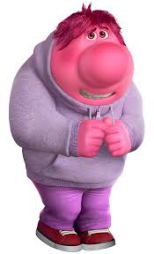
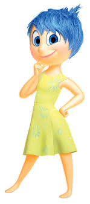
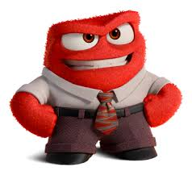
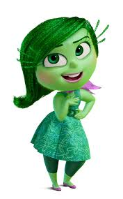
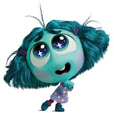

| Images |
Infromation |
Characteristics |
|  |
Embarrassment is a character and
one of the four new emotions in Inside Out 2.
He is Riley Andersen's embarrassment. |
He is quiet, doesnt talk much, but very kind. |
|  |
Joy is a character in the Inside Out franchise. She is one of the original five emotions inside the mind of Riley Andersen. |
She is happy, Delusional and always trying her best to cheer everyone up |
|  |
Anger is a character in the Inside Out franchise. He is one of the original five emotions inside the mind of Riley Andersen. |
He is a hot headed person, easy to get angry, and short tempter. |
|  |
Disgust is a character in the Inside Out franchise. She is one of the original five emotions inside the mind of Riley Andersen. |
She is what helps riley determine whats the disgusting |
|  |
Envy is a character and one of the new four emotions in Inside Out 2. She is Riley Andersen's envy. |
She is the reason why Riley gets jealous multiple times in the movie , she is very short and has curly hair. |